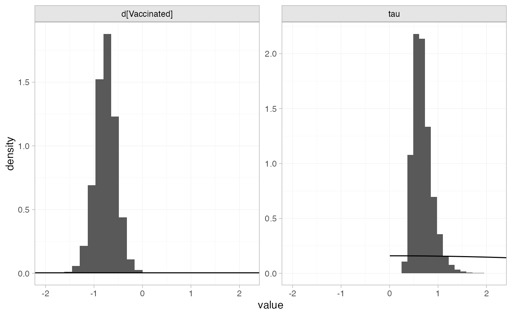
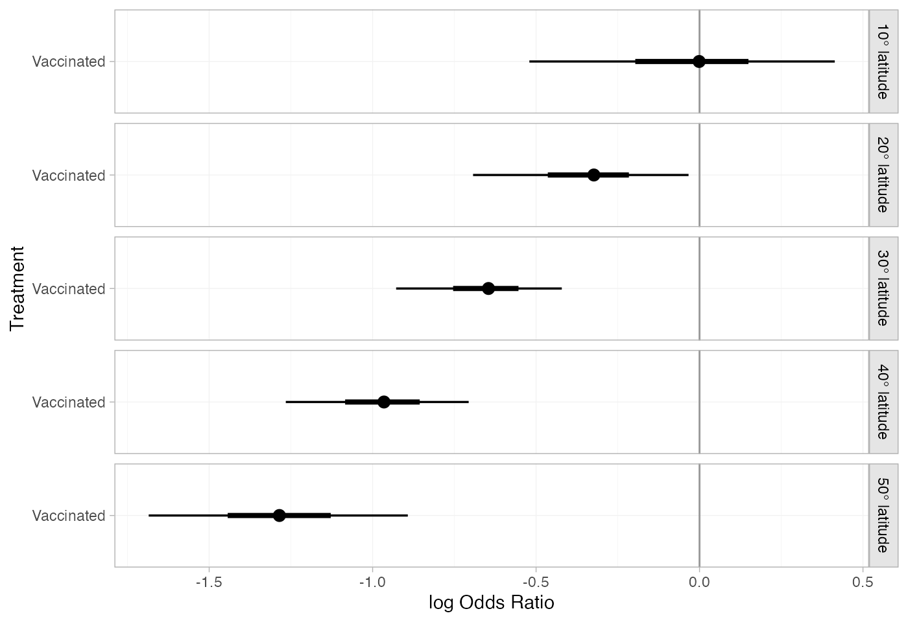
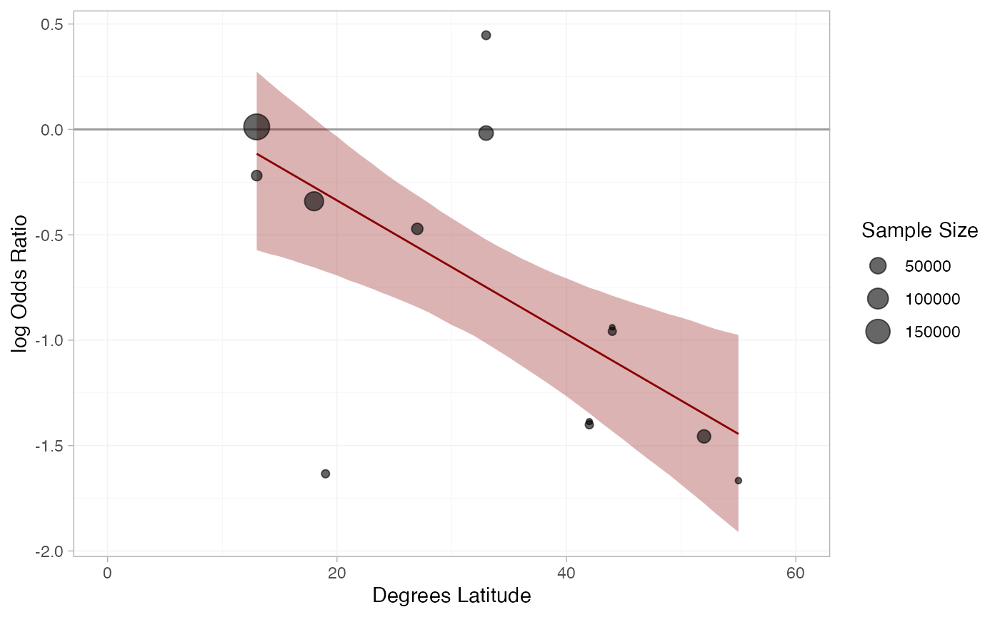

Example: BCG vaccine for tuberculosis
Source:vignettes/example_bcg_vaccine.Rmd
example_bcg_vaccine.Rmd
library(multinma)
options(mc.cores = parallel::detectCores())#> For execution on a local, multicore CPU with excess RAM we recommend calling
#> options(mc.cores = parallel::detectCores())
#>
#> Attaching package: 'multinma'
#> The following objects are masked from 'package:stats':
#>
#> dgamma, pgamma, qgammaThis vignette describes the analysis of 13 trials investigating BCG
vaccination vs. no vaccination for prevention of Tuberculosis (TB) (Dias et al. 2011; Berkey et al. 1995). The data are
available in this package as bcg_vaccine:
head(bcg_vaccine)
#> studyn trtn trtc latitude r n
#> 1 1 1 Unvaccinated 44 11 139
#> 2 1 2 Vaccinated 44 4 123
#> 3 2 1 Unvaccinated 55 29 303
#> 4 2 2 Vaccinated 55 6 306
#> 5 3 1 Unvaccinated 42 11 220
#> 6 3 2 Vaccinated 42 3 231Dias et al. (2011) used these data to demonstrate
meta-regression models adjusting for the continuous covariate
latitude, the absolute degrees latitude at which the study
was conducted, which we recreate here.
Setting up the network
We have data giving the number diagnosed with TB during trial
follow-up (r) out of the total (n) in each
arm, so we use the function set_agd_arm() to set up the
network. We set “unvaccinated” as the network reference treatment.
bcg_net <- set_agd_arm(bcg_vaccine,
study = studyn,
trt = trtc,
r = r,
n = n,
trt_ref = "Unvaccinated")
bcg_net
#> A network with 13 AgD studies (arm-based).
#>
#> ------------------------------------------------------- AgD studies (arm-based) ----
#> Study Treatment arms
#> 1 2: Unvaccinated | Vaccinated
#> 2 2: Unvaccinated | Vaccinated
#> 3 2: Unvaccinated | Vaccinated
#> 4 2: Unvaccinated | Vaccinated
#> 5 2: Unvaccinated | Vaccinated
#> 6 2: Unvaccinated | Vaccinated
#> 7 2: Unvaccinated | Vaccinated
#> 8 2: Unvaccinated | Vaccinated
#> 9 2: Unvaccinated | Vaccinated
#> 10 2: Unvaccinated | Vaccinated
#> ... plus 3 more studies
#>
#> Outcome type: count
#> ------------------------------------------------------------------------------------
#> Total number of treatments: 2
#> Total number of studies: 13
#> Reference treatment is: Unvaccinated
#> Network is connectedThe latitude variable in the bcg_vaccine
data frame will automatically be available to use in a meta-regression
model.
Meta-analysis models
We fit random effects (RE) models, firstly without any covariates,
and then with a meta-regression on the continuous covariate
latitude.
RE meta-analysis (no covariate)
We start by fitting a standard RE model without any covariates. We
use
prior distributions for the treatment effect
and study-specific intercepts
,
and a
prior distribution for the heterogeneity standard deviation
.
We can examine the range of parameter values implied by these prior
distributions with the summary() method:
summary(normal(scale = 100))
#> A Normal prior distribution: location = 0, scale = 100.
#> 50% of the prior density lies between -67.45 and 67.45.
#> 95% of the prior density lies between -196 and 196.
summary(half_normal(scale = 5))
#> A half-Normal prior distribution: location = 0, scale = 5.
#> 50% of the prior density lies between 0 and 3.37.
#> 95% of the prior density lies between 0 and 9.8.The model is fitted with the nma() function, with a
random effects model specified by
trt_effects = "random".
bcg_fit_unadj <- nma(bcg_net,
trt_effects = "random",
prior_intercept = normal(scale = 100),
prior_trt = normal(scale = 100),
prior_het = half_normal(scale = 5))#> rmup)
#> Chain 3: Iteration: 2000 / 10000 [ 20%] (Warmup)
#> Chain 1: Iteration: 2000 / 10000 [ 20%] (Warmup)
#> Chain 2: Iteration: 3000 / 10000 [ 30%] (Warmup)
#> Chain 3: Iteration: 3000 / 10000 [ 30%] (Warmup)
#> Chain 1: Iteration: 3000 / 10000 [ 30%] (Warmup)
#> Chain 2: Iteration: 4000 / 10000 [ 40%] (Warmup)
#> Chain 3: Iteration: 4000 / 10000 [ 40%] (Warmup)
#> Chain 1: Iteration: 4000 / 10000 [ 40%] (Warmup)
#> Chain 2: Iteration: 5000 / 10000 [ 50%] (Warmup)
#> Chain 2: Iteration: 5001 / 10000 [ 50%] (Sampling)
#> Chain 1: Iteration: 5000 / 10000 [ 50%] (Warmup)
#> Chain 1: Iteration: 5001 / 10000 [ 50%] (Sampling)
#> Chain 3: Iteration: 5000 / 10000 [ 50%] (Warmup)
#> Chain 3: Iteration: 5001 / 10000 [ 50%] (Sampling)
#> Chain 2: Iteration: 6000 / 10000 [ 60%] (Sampling)
#> Chain 3: Iteration: 6000 / 10000 [ 60%] (Sampling)
#> Chain 1: Iteration: 6000 / 10000 [ 60%] (Sampling)
#> Chain 3: Iteration: 7000 / 10000 [ 70%] (Sampling)
#> Chain 2: Iteration: 7000 / 10000 [ 70%] (Sampling)
#> Chain 1: Iteration: 7000 / 10000 [ 70%] (Sampling)
#> Chain 3: Iteration: 8000 / 10000 [ 80%] (Sampling)
#> Chain 2: Iteration: 8000 / 10000 [ 80%] (Sampling)
#> Chain 1: Iteration: 8000 / 10000 [ 80%] (Sampling)
#> Chain 3: Iteration: 9000 / 10000 [ 90%] (Sampling)
#> Chain 2: Iteration: 9000 / 10000 [ 90%] (Sampling)
#> Chain 1: Iteration: 9000 / 10000 [ 90%] (Sampling)
#> Chain 3: Iteration: 10000 / 10000 [100%] (Sampling)
#> Chain 3:
#> Chain 3: Elapsed Time: 1.783 seconds (Warm-up)
#> Chain 3: 1.792 seconds (Sampling)
#> Chain 3: 3.575 seconds (Total)
#> Chain 3:
#> Chain 1: Iteration: 10000 / 10000 [100%] (Sampling)
#> Chain 1:
#> Chain 1: Elapsed Time: 1.801 seconds (Warm-up)
#> Chain 1: 1.939 seconds (Sampling)
#> Chain 1: 3.74 seconds (Total)
#> Chain 1:
#> Chain 2: Iteration: 10000 / 10000 [100%] (Sampling)
#> Chain 2:
#> Chain 2: Elapsed Time: 1.774 seconds (Warm-up)
#> Chain 2: 1.967 seconds (Sampling)
#> Chain 2: 3.741 seconds (Total)
#> Chain 2:Basic parameter summaries are given by the print()
method:
bcg_fit_unadj
#> A random effects NMA with a binomial likelihood (logit link).
#> Inference for Stan model: binomial_1par.
#> 4 chains, each with iter=10000; warmup=5000; thin=1;
#> post-warmup draws per chain=5000, total post-warmup draws=20000.
#>
#> mean se_mean sd 2.5% 25% 50% 75% 97.5% n_eff
#> d[Vaccinated] -0.76 0.00 0.22 -1.20 -0.90 -0.76 -0.62 -0.33 6566
#> lp__ -13453.89 0.06 4.49 -13463.54 -13456.77 -13453.55 -13450.72 -13446.06 5292
#> tau 0.68 0.00 0.20 0.39 0.54 0.65 0.78 1.16 6576
#> Rhat
#> d[Vaccinated] 1
#> lp__ 1
#> tau 1
#>
#> Samples were drawn using NUTS(diag_e) at Fri Feb 21 16:38:47 2025.
#> For each parameter, n_eff is a crude measure of effective sample size,
#> and Rhat is the potential scale reduction factor on split chains (at
#> convergence, Rhat=1).By default, summaries of the study-specific intercepts
and random effects
are hidden, but could be examined by changing the pars
argument:
The prior and posterior distributions can be compared visually using
the plot_prior_posterior() function:
plot_prior_posterior(bcg_fit_unadj, prior = c("trt", "het"))
RE meta-regression with covariate latitude
We now fit a RE meta-regression model, adjusting for
latitude. We use
prior distributions for the treatment effect
,
study-specific intercepts
,
and regression coefficient
.
We use a
prior distribution for the heterogeneity standard deviation
.
We can examine the range of parameter values implied by these prior
distributions with the summary() method:
summary(normal(scale = 100))
#> A Normal prior distribution: location = 0, scale = 100.
#> 50% of the prior density lies between -67.45 and 67.45.
#> 95% of the prior density lies between -196 and 196.
summary(half_normal(scale = 5))
#> A half-Normal prior distribution: location = 0, scale = 5.
#> 50% of the prior density lies between 0 and 3.37.
#> 95% of the prior density lies between 0 and 9.8.Again, the model is fitted with the nma() function. The
regression formula ~ .trt:latitude means that
the interaction of latitude with treatment will be included; the
.trt special variable indicates treatment, and
latitude is in the original data set. We increase
adapt_delta to 0.99 to remove a small number of divergent
transition errors (the default for RE models is set to 0.95).
bcg_fit_lat <- nma(bcg_net,
trt_effects = "random",
regression = ~.trt:latitude,
prior_intercept = normal(scale = 100),
prior_trt = normal(scale = 100),
prior_reg = normal(scale = 100),
prior_het = half_normal(scale = 5),
adapt_delta = 0.99)#> Note: No treatment classes specified in network, any interactions in `regression` formula will be separate (independent) for each treatment.
#> Use set_*() argument `trt_class` and nma() argument `class_interactions` to change this.Basic parameter summaries are given by the print()
method:
bcg_fit_lat
#> A random effects NMA with a binomial likelihood (logit link).
#> Regression model: ~.trt:latitude.
#> Centred covariates at the following overall mean values:
#> latitude
#> 33.46154
#> Inference for Stan model: binomial_1par.
#> 4 chains, each with iter=5000; warmup=2500; thin=1;
#> post-warmup draws per chain=2500, total post-warmup draws=10000.
#>
#> mean se_mean sd 2.5% 25% 50% 75%
#> beta[.trtVaccinated:latitude] -0.03 0.00 0.01 -0.05 -0.04 -0.03 -0.03
#> d[Vaccinated] -0.76 0.00 0.12 -1.03 -0.83 -0.76 -0.69
#> lp__ -13457.21 0.12 5.07 -13468.16 -13460.40 -13456.94 -13453.61
#> tau 0.30 0.00 0.18 0.03 0.16 0.27 0.40
#> 97.5% n_eff Rhat
#> beta[.trtVaccinated:latitude] -0.01 4569 1
#> d[Vaccinated] -0.54 4898 1
#> lp__ -13448.27 1772 1
#> tau 0.73 1905 1
#>
#> Samples were drawn using NUTS(diag_e) at Fri Feb 21 16:38:58 2025.
#> For each parameter, n_eff is a crude measure of effective sample size,
#> and Rhat is the potential scale reduction factor on split chains (at
#> convergence, Rhat=1).Note that latitude has automatically been centered at
33.46, the mean value for the studies in the network.
By default, summaries of the study-specific intercepts
and study-specific relative effects
are hidden, but could be examined by changing the pars
argument:
The prior and posterior distributions can be compared visually using
the plot_prior_posterior() function:
plot_prior_posterior(bcg_fit_lat, prior = c("trt", "reg", "het"))
Model fit and comparison
Model fit can be checked using the dic() function:
(bcg_dic_unadj <- dic(bcg_fit_unadj))
#> Residual deviance: 26 (on 26 data points)
#> pD: 23.5
#> DIC: 49.5
(bcg_dic_lat <- dic(bcg_fit_lat))
#> Residual deviance: 30.7 (on 26 data points)
#> pD: 21.5
#> DIC: 52.1The DIC is very similar between the two models, so we might at first choose the unadjusted model. The posterior mean residual deviance is larger for the model with the covariate, but this model also has a lower effective number of parameters so is allowing for more shrinkage of the random treatment effects. Moreover, the model with the covariate has a much lower estimated heterogeneity standard deviation:
summary(bcg_fit_unadj, pars = "tau")
#> mean sd 2.5% 25% 50% 75% 97.5% Bulk_ESS Tail_ESS Rhat
#> tau 0.68 0.2 0.39 0.54 0.65 0.78 1.16 6616 10707 1
summary(bcg_fit_lat, pars = "tau")
#> mean sd 2.5% 25% 50% 75% 97.5% Bulk_ESS Tail_ESS Rhat
#> tau 0.3 0.18 0.03 0.16 0.27 0.4 0.73 1678 2461 1Adjusting for latitude is explaining a substantial amount of heterogeneity in the data. The 95% Credible Interval for the regression coefficient also excludes zero:
summary(bcg_fit_lat, pars = "beta")
#> mean sd 2.5% 25% 50% 75% 97.5% Bulk_ESS Tail_ESS Rhat
#> beta[.trtVaccinated:latitude] -0.03 0.01 -0.05 -0.04 -0.03 -0.03 -0.01 4890 4242 1
plot(bcg_fit_lat,
pars = "beta",
ref_line = 0,
stat = "halfeye")
Altogether, we might prefer the model with the adjustment for latitude. When considering covariates in random effects models it is important not to just look at the DIC (Dias et al. 2011). We should also consider any reductions in heterogeneity, and the estimated regression coefficients and their standard error. The DIC is not sensitive to changes in the heterogeneity, as RE models are very flexible and can fit the data well whatever the level of heterogeneity.
Further results
We can produce estimates of the relative effect of vaccination at any
latitude using the relative_effects() function. The
newdata argument specifies a data frame containing the
values of the covariate latitude that we are interested in,
and the study argument is used to specify a column of
newdata for an informative label.
bcg_releff_lat <- relative_effects(bcg_fit_lat,
newdata = tibble::tibble(latitude = seq(10, 50, by = 10),
label = paste0(latitude, "\u00B0 latitude")),
study = label)
bcg_releff_lat
#> ----------------------------------------------------------- Study: 10° latitude ----
#>
#> Covariate values:
#> latitude
#> 10
#>
#> mean sd 2.5% 25% 50% 75% 97.5% Bulk_ESS Tail_ESS Rhat
#> d[10° latitude: Vaccinated] -0.02 0.22 -0.52 -0.13 0 0.1 0.41 4584 4077 1
#>
#> ----------------------------------------------------------- Study: 20° latitude ----
#>
#> Covariate values:
#> latitude
#> 20
#>
#> mean sd 2.5% 25% 50% 75% 97.5% Bulk_ESS Tail_ESS Rhat
#> d[20° latitude: Vaccinated] -0.34 0.16 -0.69 -0.42 -0.32 -0.25 -0.03 4587 4402 1
#>
#> ----------------------------------------------------------- Study: 30° latitude ----
#>
#> Covariate values:
#> latitude
#> 30
#>
#> mean sd 2.5% 25% 50% 75% 97.5% Bulk_ESS Tail_ESS Rhat
#> d[30° latitude: Vaccinated] -0.65 0.12 -0.93 -0.72 -0.65 -0.58 -0.42 4890 4879 1
#>
#> ----------------------------------------------------------- Study: 40° latitude ----
#>
#> Covariate values:
#> latitude
#> 40
#>
#> mean sd 2.5% 25% 50% 75% 97.5% Bulk_ESS Tail_ESS Rhat
#> d[40° latitude: Vaccinated] -0.97 0.14 -1.27 -1.05 -0.97 -0.89 -0.71 5451 5245 1
#>
#> ----------------------------------------------------------- Study: 50° latitude ----
#>
#> Covariate values:
#> latitude
#> 50
#>
#> mean sd 2.5% 25% 50% 75% 97.5% Bulk_ESS Tail_ESS Rhat
#> d[50° latitude: Vaccinated] -1.29 0.19 -1.68 -1.39 -1.29 -1.18 -0.89 5398 4690 1The plot() method may be used to visually compare these
estimates:
plot(bcg_releff_lat,
ref_line = 0)
A more sophisticated plot shows the regression line and confidence band for the effect of latitude, overlaid on the observed log odds ratios in each study:
library(dplyr)
#>
#> Attaching package: 'dplyr'
#> The following objects are masked from 'package:stats':
#>
#> filter, lag
#> The following objects are masked from 'package:base':
#>
#> intersect, setdiff, setequal, union
library(ggplot2)
# Get data for regression line
lat_range <- range(bcg_vaccine$latitude)
lat_dat <- tibble(latitude = seq(lat_range[1], lat_range[2], by = 1))
bcg_lat_reg <- relative_effects(bcg_fit_lat,
newdata = lat_dat) %>%
as_tibble() %>%
bind_cols(lat_dat)
# Get study log odds ratios
bcg_lor <- bcg_vaccine %>%
group_by(studyn) %>%
mutate(lor = log(r / (n - r)) - log(first(r) / (first(n) - first(r))),
sample_size = sum(n)) %>%
slice(-1)
# Plot
ggplot(aes(x = latitude), data = bcg_lor) +
geom_hline(yintercept = 0, colour = "grey60") +
geom_ribbon(aes(ymin = `2.5%`, ymax = `97.5%`), data = bcg_lat_reg,
fill = "darkred", alpha = 0.3) +
geom_line(aes(y = mean), data = bcg_lat_reg,
colour = "darkred") +
geom_point(aes(y = lor, size = sample_size), alpha = 0.6) +
coord_cartesian(xlim = c(0, 60)) +
xlab("Degrees Latitude") + ylab("log Odds Ratio") +
scale_size("Sample Size") +
theme_multinma()
In the presence of heterogeneity, it has been argued that decision
makers should consider the predictive distribution of relative effects
in a new study, instead of the posterior distribution of the mean
treatment effects, as this reflects uncertainty due to heterogeneity and
may better represent uncertainty about a future roll-out of a treatment
(see Dias et al.
2011). We can produce predictive distributions using the
predictive_distribution = TRUE argument to
relative_effects(). Dias et al. (2018, sec. 8.3.2) consider the
predictive distributions for this BCG vaccine analysis.
In the unadjusted analysis, whilst there is substantial evidence that vaccination is effective on average and essentially zero probability of harm based on the mean effect, the predictive distribution for effectiveness in a new study is wide and covers a range of harmful effects:
(bcg_predeff_unadj <- relative_effects(bcg_fit_unadj, predictive_distribution = TRUE))
#> mean sd 2.5% 25% 50% 75% 97.5% Bulk_ESS Tail_ESS Rhat
#> delta_new[Vaccinated] -0.77 0.75 -2.3 -1.22 -0.76 -0.31 0.73 16583 17208 1The predictive probability of a new trial showing a harmful effect is:
For the analysis adjusting for latitude, the predictive distribution of relative effects now depends on latitude; here we calculate these in increments of 10 degrees from the equator:
bcg_predeff_lat <- relative_effects(bcg_fit_lat,
newdata = tibble::tibble(latitude = seq(0, 50, by = 10),
label = paste0(latitude, "\u00B0 latitude")),
study = label,
predictive_distribution = TRUE)
bcg_predeff_lat
#> ------------------------------------------------------------ Study: 0° latitude ----
#>
#> Covariate values:
#> latitude
#> 0
#>
#> mean sd 2.5% 25% 50% 75% 97.5% Bulk_ESS Tail_ESS Rhat
#> delta_new[0° latitude: Vaccinated] 0.3 0.46 -0.71 0.08 0.32 0.52 1.2 6645 5618 1
#>
#> ----------------------------------------------------------- Study: 10° latitude ----
#>
#> Covariate values:
#> latitude
#> 10
#>
#> mean sd 2.5% 25% 50% 75% 97.5% Bulk_ESS Tail_ESS
#> delta_new[10° latitude: Vaccinated] -0.02 0.41 -0.93 -0.21 0 0.18 0.8 7313 6060
#> Rhat
#> delta_new[10° latitude: Vaccinated] 1
#>
#> ----------------------------------------------------------- Study: 20° latitude ----
#>
#> Covariate values:
#> latitude
#> 20
#>
#> mean sd 2.5% 25% 50% 75% 97.5% Bulk_ESS Tail_ESS
#> delta_new[20° latitude: Vaccinated] -0.34 0.38 -1.18 -0.51 -0.32 -0.16 0.45 8079 6925
#> Rhat
#> delta_new[20° latitude: Vaccinated] 1
#>
#> ----------------------------------------------------------- Study: 30° latitude ----
#>
#> Covariate values:
#> latitude
#> 30
#>
#> mean sd 2.5% 25% 50% 75% 97.5% Bulk_ESS Tail_ESS
#> delta_new[30° latitude: Vaccinated] -0.65 0.37 -1.44 -0.82 -0.64 -0.48 0.12 8646 7396
#> Rhat
#> delta_new[30° latitude: Vaccinated] 1
#>
#> ----------------------------------------------------------- Study: 40° latitude ----
#>
#> Covariate values:
#> latitude
#> 40
#>
#> mean sd 2.5% 25% 50% 75% 97.5% Bulk_ESS Tail_ESS
#> delta_new[40° latitude: Vaccinated] -0.97 0.38 -1.75 -1.15 -0.96 -0.79 -0.18 8573 7868
#> Rhat
#> delta_new[40° latitude: Vaccinated] 1
#>
#> ----------------------------------------------------------- Study: 50° latitude ----
#>
#> Covariate values:
#> latitude
#> 50
#>
#> mean sd 2.5% 25% 50% 75% 97.5% Bulk_ESS Tail_ESS
#> delta_new[50° latitude: Vaccinated] -1.29 0.4 -2.12 -1.47 -1.29 -1.09 -0.45 7930 7734
#> Rhat
#> delta_new[50° latitude: Vaccinated] 1The predictive probabilities of a new trial carried out at a given latitude showing a harmful effect can be calculated as:
colMeans(as.matrix(bcg_predeff_lat) > 0)
#> delta_new[0° latitude: Vaccinated] delta_new[10° latitude: Vaccinated]
#> 0.8062 0.5047
#> delta_new[20° latitude: Vaccinated] delta_new[30° latitude: Vaccinated]
#> 0.1327 0.0398
#> delta_new[40° latitude: Vaccinated] delta_new[50° latitude: Vaccinated]
#> 0.0135 0.0061So the predictive probability that a new trial carried out at the equator shows a harmful effect is around 80%, whereas at 50 degrees latitude the predictive probability is only 0.7%.